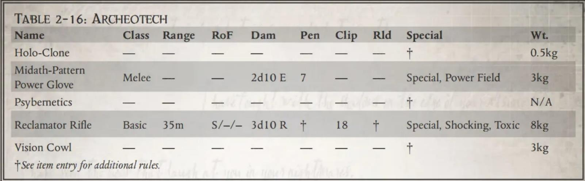

以后，该教派便开始秘密批量制造这种特种步枪，以此筹措资金，用于进一步研发大型“回收舱（Reclamator Chambers）”——这正是那位铸造者的笔记中所提及的众多潜在研究项目之一。
回收步枪能够完全无视护甲，但对科技造物（technological items）无效。凡以此方式死亡的受害者，其身上携带的武器、护甲、植入物及其他一切非生物物品，均将完好无损地保留下来。回收步枪需耗时六小时并接入某种电源方可完成充能。此外，此类武器制造周期极其漫长，若置身于高重力或低重力环境中，它们往往会发生灾难性的故障，并随之获得粗劣（Inaccurate）、过热（Overheats）及不可靠（Unreliable）这三项武器特性。
| 名称 | 类型 | 射程 | 射速 | 伤害 | 破甲 | 弹夹 | 装填 | 特性 | 重量 |
|---|---|---|---|---|---|---|---|---|---|
| 全息克隆 | —— | —— | —— | —— | — | —— | —— | † | 0.5kg |
| 米达斯型动力手套 | 格斗 | —— | —— | 2d10 E | 7 | —— | —— | 特殊，动力场 | 3kg |
| 灵能植入物 | —— | —— | —— | —— | — | —— | —— | † | N/A |
| 回收步枪 | 基础 | 35m | S/–/– | 3d10 R | † | 18 | † | 特殊，震击，淬毒 | 8kg |
| 视觉头罩 | —— | —— | —— | —— | — | —— | —— | † | 3kg |
†详见物品条目以获取补充规则。
《拉斯世界》集成武器、远程武器、近战武器、武器词条、装备与植入物（拉斯世界）、弹药、护甲由迷路的编注：幻象翻译。《失落的数据板》武器、机仆与自动机械、古代科技由五三点九翻译。装备与植入物（失落的数据板）由维维豆糕翻译。
V1.0 文档整合完成
V1.1 修正格式
添加《激进派手册》中的暗影战争章节内容
修正《审判官手册》中爆弹武器没有撕裂词条的问题
修改《恶魔猎手》中的神圣武器条目，现在命名为受膏武器
V1.2 更新《GM 工具》中的毒药条目
添加未翻译的条目标记为 TBD
添加了翻译条目《审判官手册》中的：近战武器（蛮荒/封建）；护甲与立场（蛮荒/封建、巢都）；药物（审
；植入物；消费品、服务与其他（蛮荒/封建、巢都、边境、虚空）部分
判庭）
添加了翻译条目《激进派手册》中的：黑暗技术武器部分
添加了翻译条目《忠烈之血》中的：机仆；服务部分
分离《黑暗诸神的信徒》恶魔武器规则，因为恶魔武器不是可购买物品
分离《激进派手册》联系人和驯养野兽规则，因为两者不是可购买服务
V1.3.1 添加了翻译条目《审判官手册》中的：射击武器（蛮荒/封建）；消费品、服务与其他（审判庭）；机仆、
侍宠、伺服颅骨部分
添加了翻译条目《激进派手册》中的：黑暗技术的装备、工具与植入物部分
添加了翻译条目《忠烈之血》中的：异端必报扩展武器和护甲
添加了翻译条目《拉斯世界》中的：失落的数据板武器、机仆与自动机械、古代科技部分
分离《恶魔猎手》中的灰骑士装备，因为灰骑士装备不是可购买物品也不能通过影响力征用
修正格式